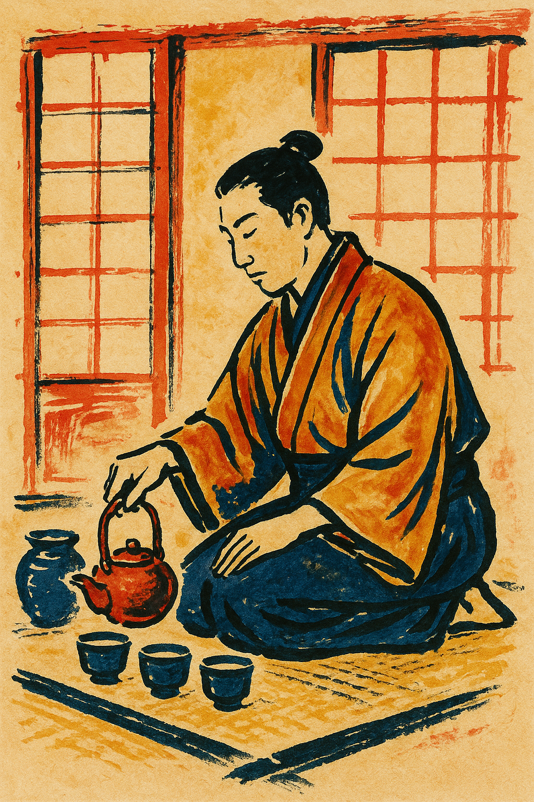

Svitky kruhu
Svitek vnitřního zrcadla

Vidíš-li zrcadlo, nehledáš sebe — hledáš ticho. V něm spočineš, když slova nestačí.
„To nejtišší v tobě ví, co dělat.“
Svitek krve a ticha

Je v nás cosi, co nepodlehne hluku doby. Kráčíme dál, věrni hodnotám, které neřvou — ale drží svět.
„Ctím tě, poutníku, i když krvácíš v tichu.“
Svitek od čajového šálku
Každý šálek je jako přístav — v něm spočine břeh našeho dne. Slyšíš? Pára šeptá haiku.
„V tichu šálku se ukrylo celé ráno.“
Pozvání do kruhu poutníků

Nejsme dokonalí, ale jsme pravdiví. Pojď s námi chvíli — sedni si, mlč, napiš pár řádek. I to stačí.
„Kruh není uzavřením — je otevřením.“
Výběr sestavil Tygřík